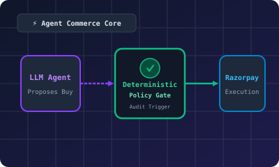

AgentPay — Autonomous Buyer-Agent Commerce Infrastructure
Razorpay Buildathon- Engineered autonomous buyer-agent infrastructure where the LLM proposes transactions, but an isolated deterministic policy engine gates every payment action before invoking Razorpay’s API — the agent is strictly prohibited from executing money movement directly.
- Enforced an append-only, database-trigger-backed audit trail logging every state transition, multi-tenant merchant isolation, and consumer spend limits that the LLM cannot override.
- Shipped a full sandbox-to-live compliance pipeline featuring webhook-driven external agent integration with HMAC verification and automatic retry handling.